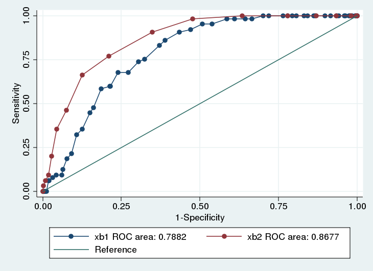
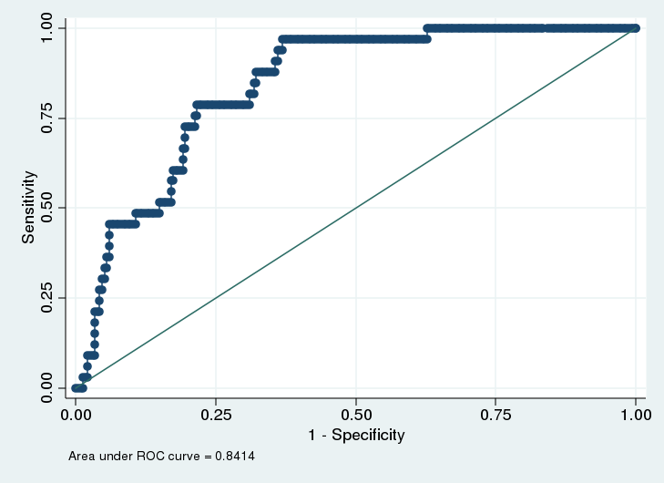

Code
library(rms)
library(ggplot2)
tryCatch(source('pander_registry.R'), error = function(e) invisible(e))Lecture 13
October 7, 2024
library(rms)
library(ggplot2)
tryCatch(source('pander_registry.R'), error = function(e) invisible(e))Cluster Analysis
Focuses on identifying observations (covariates) with similar characteristics
Divide a population into subgroups based on patterns of similar measurement
Clustering can be done by considering one variable (univariable) or multiple variables (multivariable)
Number of clusters can be known or unknown
Examples
Microarrays
fMRI
“Small \(n\), large \(p\)” (few subjects, many predictors)
Statistical techniques
Stepwise regression
Regression trees
Other data-driven model building approaches
Getting valid inference (i.e. reliable p-values, unbiased parameter estimates) particularly challenging
Quantifying and comparing distributions
Compare distribution of the outcome variable across levels of the grouping variable or variables
Compare salary in males and females, across professors of the same rank, degree, experience, and field
Compare FEV in smokers and non-smokers, across teenagers of the same age and height
Need to decide which summary measure is appropriate for describing the distribution
Common summary measures: Means, median, geometric mean, odds, rates, hazards
Other measures: Variance, skewness, kurtosis, likelihood of extreme values, quantiles, etc.
May desire estimates within specific subgroups
Estimates of the association within gender, race, or age groups
(This is effect modification)
Regression based prediction
Prediction of summary measures
Point prediction
Interval prediction
Quantify the uncertainty of the average
Range of summary measure that might be reasonable to observe
Prediction of individual measurements
Point prediction
Interval prediction
Quantify the uncertainty of the individual prediction
Range of measurements that might reasonably be observed in a future individual with given covariates
Creatinine is a continuously produced breakdown product in muscles
Removed by the kidney through filtration
Amount of creatinine cleared by the kidneys in 24 hours is a measure of renal function
Gold standard is to collect urine output for 24 hours, measure creatinine
Would prefer to find a combination of blood and urine measures that can be obtained at one time point, yet still provides accurate prediction of a patient’s creatinine clearance
Statistical approach
Collect a training dataset to build a regression model for prediction
Measure true creatinine clearance
Measure age, gender, weight, height, blood makers, urinary markers, etc.
Fit a (data driven?) regression model to predict true creatinine clearance
Collect a validation dataset
Use the regression estimates (the \(\beta\)s) from the training dataset to see how well your model predict creatinine clearance
Quantify the accuracy of the predictive model (e.g. mean squared error)
Cross validation
Want to predict which infants are more likely to be less than 2500 grams at birth
Possible predictors: Age, race, blood biomarkers collected during pregnancy
Statistical Approach
Collect a training dataset to build a regression model for prediction
Measure birth weight
Measure age, race, blood biomarkers
Fit a (data driven?) regression model to predict low birth weight
Collect a validation dataset
Use the regression estimates (the \(\beta\)s) from the training dataset to see how well your model predict low birth weight
Quantify the accuracy of the predictive model
Sensitivity, specificity (ROC curves)
Predictive value positive, predictive value negative
Identify the range of PSA values that would be expected in 95% of most healthy adult males
Possibly stratify by age, race
Statistical Approach
Collect a training dataset to build a regression model for prediction
Measure PSA and variable to predict PSA
Need to estimate the quantiles
Mean plus/minus 2 standard deviations (makes strong Normality assumption)
Estimate the quantiles, provide CIs around the quantiles (likely low precision)
Collect a validation dataset
Necessary assumptions for classical regression (no robust standard errors)
Independence of response measurements within identified clusters
Have appropriately modeled the within group variance
Linear regression: Equal variance across groups
Other regressions: Appropriate mean-variance relationship
Sample size is large enough so that parameter estimates approximately follow a Normal distribution
Necessary assumptions for first order trends using robust standard errors
Independence of response measurements within identified clusters
(Robust standard errors accounts for heteroscedasticity in large samples)
Sample size is large enough so that parameter estimates approximately follow a Normal distribution
Additional assumptions for predictions of means
Our regression model has accurately described the relationship between summary measures across groups
For continuous covariates, often involves flexible models that allow for departures from linearity
Additional assumptions for predictions of individual observations
Also need to know the shape of the distribution within each group
Methods implemented in software often rely on strong assumptions like Normality
Given age, height, and sex, estimate the mean (or geometric mean) FEV
Given age and PSA, estimate the probability (or odds) of remaining in remission for 24 months
Assumptions
Independence (between clusters for robust SE)
Variance approximated by the model (relaxed for robust SE)
Regression model accurately describes the relationship of summary measures across groups
Sufficient sample sizes for asymptotic distributions of parameters to be a good approximation
Point estimates obtained by substitution of predictor values into the estimated regression equation
\(E[\textrm{Chol} | \textrm{Age}] = 200 + 0.33 \times \textrm{Age}\)
\(\textrm{logodds}(\textrm{Survival} | \textrm{Age}) = -0.1365 - 0.007899 \times \textrm{Age}\)
Expected log-odds of Survival for a 50 year old is \(-0.1365 - 0.007899 \times 50 = -0.53\)
Expected odds \(= e^{-.53} = 0.59\)
Expected probability \(= 0.37\)
If assumptions hold, interval estimates can be obtained
We generally find a confidence interval for the transformed quantity, and then back transform to the desired quantity
Statistical criteria for determining the “best” estimate
Consistent: Correct estimate (with infinite sample size)
Precise: Minimum variance among (unbiased) estimators
Common regression methods provide the best estimate in a wide variety of settings
Necessary assumptions
Independence
Variance approximated by the model (relaxed for robust SE)
Regression model accurately describes the relationship among summary measures across groups
Sufficient sample size so that asymptotic Normality of the parameter estimates holds
Interval estimates
When we substitute in the predictor values, it provides an estimate of the model transformation of the summary measure
Model transformation of the summary measure varies by regression setting
Linear regression: Mean
Linear regression on log transformed outcome: Log geometric mean
Logistic regression: Log odds
Poisson regression: Log rate
Formulas for the confidence interval
In general: \(\textrm{(estimate)} \pm \textrm{(crit value)} \times \textrm{(std error)}\)
In linear regression, the \(t\) distribution is usually used to obtain the confidence interval
Stata: \(\textrm{(crit value)} = \texttt{invttail}(df, \alpha/2)\)
R: \(\textrm{(crit value)} = \texttt{qt}(1-\alpha/2, df)\)
Degrees of freedom \(df = n - \textrm{number of predictors in model}\)
In other regressions, we use the standard Normal distribution
Stata: \(\textrm{(crit value)} = \texttt{invnorm}(1 - \alpha/2) = 1.96\)
R: \(\textrm{(crit value)} = \texttt{qnorm}(1-\alpha/2) = 1.96\)
Interval estimates in Stata
After any regression command, the Stata command predict will give compute estimates and standard errors
predict varname, [what]
varname is that name of the new variable to be created
what is one of
xb: The linear predictor (works for all regression)
stdp: Standard error of the linear prediction
p: For logistic regression, to predicted probability
Interval estimates in R
After storing a model, the R function predict will give compute estimates and standard errors
predict(object, se.fit=FALSE, ...)
object is the stored fitted model
se.fit will provide the standard error of the fit (defaults to FALSE)
See help(predict) for more details and options
. gen logfev = log(fev)
. regress logfev height age
Source | SS df MS Number of obs = 654
-------------+------------------------------ F( 2, 651) = 1361.98
Model | 58.5363336 2 29.2681668 Prob > F = 0.0000
Residual | 13.9895809 651 .021489372 R-squared = 0.8071
-------------+------------------------------ Adj R-squared = 0.8065
Total | 72.5259145 653 .111065719 Root MSE = .14659
------------------------------------------------------------------------------
logfev | Coef. Std. Err. t P>|t| [95% Conf. Interval]
-------------+----------------------------------------------------------------
height | .0439913 .0016473 26.71 0.000 .0407567 .0472259
age | .0198162 .0031805 6.23 0.000 .0135709 .0260616
_cons | -1.971147 .0783322 -25.16 0.000 -2.124961 -1.817332
------------------------------------------------------------------------------
.
. predict fitlogfev
(option xb assumed; fitted values)
. predict sefit, stdp
.
. gen gmfev= exp(fitlogfev)
. gen gmlofev = exp(fitlogfev - invttail(651, .025) * sefit)
. gen gmhifev = exp(fitlogfev + invttail(651, .025) * sefit)
.
. list gmfev gmlofev gmhifev if age==10 & height==66
+--------------------------------+
| gmfev gmlofev gmhifev |
|--------------------------------|
330. | 3.097021 3.038578 3.156588 |
...
547. | 3.097021 3.038578 3.156588 |
+--------------------------------+
. logit smoker height age
Logistic regression Number of obs = 654
LR chi2(2) = 106.39
Prob > chi2 = 0.0000
Log likelihood = -158.52851 Pseudo R2 = 0.2512
------------------------------------------------------------------------------
smoker | Coef. Std. Err. z P>|z| [95% Conf. Interval]
-------------+----------------------------------------------------------------
height | .0505297 .0410562 1.23 0.218 -.029939 .1309984
age | .4377213 .0661923 6.61 0.000 .3079868 .5674557
_cons | -10.45429 2.351283 -4.45 0.000 -15.06272 -5.845856
------------------------------------------------------------------------------
. predict logodds, xb
. predict selogodds, stdp
.
. gen odds= exp(logodds)
. gen oddslo= exp(logodds - 1.96 * selogodds)
. gen oddshi= exp(logodds + 1.96 * selogodds)
. list odds oddslo oddshi if age==10 & height==66
+--------------------------------+
| odds oddslo oddshi |
|--------------------------------|
330. | .0644342 .0400909 .1035588 |
...
547. | .0644342 .0400909 .1035588 |
+--------------------------------+Methods are for continuous outcomes
Given age, height, and sex, predict a new subject’s FEV
Necessary assumptions to predict individual observations
Independence (between clusters for robust SE)
Variance approximated by the model (NOT relaxed for robust SE)
Regression model accurately describes the relationship of summary measures across groups
Shape of the distribution the same in each group
Sufficient sample sizes for asymptotic distributions of parameters to be a good approximation
Assumptions are very strong
Consequently, we do not have many methods that provide robust inference
In general, I prefer methods that make as few assumptions as possible
Robust standard errors will not help in this situation
Proper transformation of outcomes and predictors may be necessary so that underlying assumptions of classical linear regression model hold
Models, estimates, will need to be appropriately penalized for valid inference
Topic of more advanced regression courses (Regression Modeling Strategies)
Precise methods have been developed for
Binary variables (the mean specifies the variances)
Continuous data that follow a Normal distribution
Point estimates obtained by substitution into the estimated regression equation
\(E[\textrm{Chol} | \textrm{Age}] = 200 + 0.33 \times \textrm{Age}\)
When we substitute in age values, it provides an estimate of the forecast cholesterol
Interval estimates
Under appropriate assumptions, we can obtain standard errors for such predictions
Standard errors must account for two sources of variability
Variability in estimating the regression parameters (same as in predictions of summary measures)
Variability due to subject
Additional variability about the sample mean; “within group standard deviation”
Estimating this sources of variability is where the additional Normality assumption is key
Formulas for the prediction interval
In general: \(\textrm{(prediction)} \pm \textrm{(crit value)} \times \textrm{(std error)}\)
In linear regression, the \(t\) distribution is usually used to obtain the prediction interval
Stata: \(\textrm{(crit value)} = \texttt{invttail}(df, \alpha/2)\)
R: \(\textrm{(crit value)} = \texttt{qt}(1-\alpha/2, df)\)
Degrees of freedom \(df = n - \textrm{number of predictors in model}\)
Interval estimates in Stata
After any regression command, the Stata command predict will give compute estimates and standard errors
predict varname, [what]
varname is that name of the new variable to be created
what is one of
xb: The linear predictor (works for all regression)
stdf: Standard error of the forecast prediction
Interval estimates in R
After storing a model, the R function predict will give compute estimates and standard errors
predict(object, se.fit=FALSE, ...)
object is the stored fitted model
se.fit will provide the standard error of the fit (defaults to FALSE)
For the standard error of the forecast, need to include the root mean squared error
General comment about software
Commercial software only implements prediction intervals by assuming Normal data
If using R libraries (or Stata ado files) for prediction, carefully investigate and understand how they are making predictions
Be careful that you understand exactly what is going on if you are interested in making predictions
. regress logfev height age
Source | SS df MS Number of obs = 654
-------------+------------------------------ F( 2, 651) = 1361.98
Model | 58.5363336 2 29.2681668 Prob > F = 0.0000
Residual | 13.9895809 651 .021489372 R-squared = 0.8071
-------------+------------------------------ Adj R-squared = 0.8065
Total | 72.5259145 653 .111065719 Root MSE = .14659
------------------------------------------------------------------------------
logfev | Coef. Std. Err. t P>|t| [95% Conf. Interval]
-------------+----------------------------------------------------------------
height | .0439913 .0016473 26.71 0.000 .0407567 .0472259
age | .0198162 .0031805 6.23 0.000 .0135709 .0260616
_cons | -1.971147 .0783322 -25.16 0.000 -2.124961 -1.817332
------------------------------------------------------------------------------
. predict fitlogfev
(option xb assumed; fitted values)
. predict sepredict, stdf
. gen predfev= exp(fitlogfev)
. gen predlofev = exp(fitlogfev - invttail(651, .025) * sepredict)
. gen predhifev = exp(fitlogfev + invttail(651, .025) * sepredict)
. list predfev predlofev predhifev if age==10 & height==66
+--------------------------------+
| predfev predlo~v predhi~v |
|--------------------------------|
330. | 3.097021 2.320911 4.132662 |
...
547. | 3.097021 2.320911 4.132662 |
+--------------------------------+The preceding output gave prediction for individual observations
We can compare these results to the prediction for summary measures done previously (see below)
+-----------------------------------------------------------------+
| gmfev gmlofev gmhifev predfev pre~ofev predhi~v |
|-----------------------------------------------------------------|
330. | 3.097021 3.038578 3.156588 3.097021 2.320911 4.132662 |
+-----------------------------------------------------------------+Point estimates identical
Confidence interval for individual predictions is wider
As \(n\) increases, the width of the prediction interval (on the log scale) approaches \(\pm 1.96 \times \textrm{RMSE}\)
As \(n\) increases, the width of the interval around the summary measure approaches \(0\)
We can also calculate the standard error of the prediction
Example: Age is 10 and Height is 66
. gen sepredict2 = sepredict^2
. gen sefit2 = sefit^2
. list sepredict sefit sepredict2 sefit2 if age==10 & heigh==66
+------------------------------------------+
| sepred~t sefit sepred~2 sefit2 |
|------------------------------------------|
330. | .1469132 .009702 .0215835 .0000941 |
+------------------------------------------+
. di .14659^2 +.0000941
.02158273\(\textrm{se}_\textrm{pred}^2 = \textrm{se}_\textrm{fit}^2 + \textrm{RMSE}^2\)
\(\textrm{se}_\textrm{pred} = 0.1469132\)
\(\textrm{se}_\textrm{fit} = 0.0215835\)
\(\textrm{RMSE} = 0.14659\)
Note that discrepancy in hand calculation versus Stata output (0.215835 vs 0.2158273) is due to rounding error
This is an academic exercise in Stata, but necessary in R (unless you can find a function to do it for you)
Basic ideas behind prediction intervals
Model: \(Y_i | X_i \sim N(\beta_0 + \beta_1 X_i, \sigma^2)\)
Alternative specification: \(Y_i | X_i = \beta_0 + \beta_1 X_i + \epsilon_i\)
Estimated mean: \(\hat{\beta}_0 + \hat{\beta}_1 X_i \sim N\left(\beta_0 + \beta_1 X_i, \sigma^2 V\right)\)
Predicted mean: \(\hat{\beta}_0 + \hat{\beta}_1 X_i + \epsilon_i \sim N\left(\beta_0 + \beta_1 X_i, \sigma^2 (1 + V)\right)\)
\(V = \frac{1}{n} + \frac{(X_h - \overline{X})^2}{\sum_{i=1}^n (X_i - \overline{X})^2}\)
\(X_h\) is the chosen value of the covariate (e.g. age==10)
Note: As \(n \rightarrow \infty, V \rightarrow 0\)
Sometimes the scientific question is one of deriving a rule to classify subjects
Diagnosis of prostate cancer: Based on age, race, and PSA, should we make a diagnosis of prostate cancer?
Prognosis of patients with primary biliary cirrhosis: Based on age, bilirubin, albumin, edema, protime, is the patient likely to die within the next year?
Classification can be regarded as trying to predict the value of a binary variable
Earlier, we were estimating the probability and odds of relapse within a particular group (a summary measure)
Now we want to decide whether a particular individual will relapse or not (an individual measure)
There is an obvious connection between the above two ideas
The probability or odds tells us everything about the distribution of values
The only possible values are 0 or 1
Typical approach
First, use regression model to estimate the probability of event in each group
Second, form a decision rule based on estimated probability of event
If estimate \(\geq c\) (or \(\leq c\)), predict outcome is 1
If estimate \(< c\) (or \(> c\)), predict outcome is 0
Quantify the accuracy of the decision rule
For disease \(D\) and test \(T\)
Sensitivity: \(\textrm{Pr}(T^+ | D^+)\)
Specificity: \(\textrm{Pr}(T^- | D^-)\)
Predicted Value Positive: \(\textrm{Pr}(D^+ | T^+)\)
Predicted Value Negative: \(\textrm{Pr}(D^- | T^-)\)
Old method for considering a large number of covariates that might possibly be predictive of an outcome
Available in all software as an automated tool, but should not be used
Avoid recreating the stepwise approach when building your own models manually
Major caveats
Overfits your dataset
P-values are not true p-values; they are very anti-conservative
You will often obtain different models if you use “forward” or “backward” stepwise regression
Ignores confounding effects (a variable could be an important confounder, but itself not be statistically significant in the model)
Without clustering certain predictors, may throw out covariates to make non-sensical model
Suppose race/ethnicity is coded as White, Black, Hispanic, Other
Want to model as 3 dummy variables
Stepwise may throw out one of your dummy variables, keep the rest
Pairwise significance would also be highly dependent on reference group chosen by analyst
Two flavors of stepwide model building
Start with no covariates: “Forward” stepwise regression
Start with all covariates: “Backward” stepwise regression
Stepwise procedure proceeds by adding or removing covariates from the model base on the corresponding partial \(t\) or \(Z\) test
Must pre-specify a “P to enter” and “P to remove”
To avoid infinite loops, P to enter must be less than P to remove
E.g. Add a variable to the model if \(p < 0.05\), but only remove a variable from the model if \(p > 0.10\)
Repeat the process until you arrive at a final model
Receiver operating characteristic (ROC) curves plot the sensitivity against the false positive rate (e.g. 1 - specificity)
Ideal tests will have both high sensitivity and high specificity (low false positives)
Graphically depicted as points in the upper left portion of the plot
1:1 line represents a test that is no better than the flip of a coin
Test usually involves the classification of some binary outcome by a continuous predictor (or set of continuous predictors)
When the continuous predictor is above some point \(c\), the test is said to be positive
ROC curves plots the sensitivity and false positive rate for all possible values of \(c\)
Major drawbacks to ROC analysis
Tempts analyst to find a cutoff point (\(c\)) when none really exists
Better to treat your covariate or linear prediction as a continuous variable
Question: Is age or height a better predictor of smoking status?
Will compare the ROC curves
Often done use the area under the curve (AUC)
Model with higher AUC is better
A null model (not predictive of outcome) will have area of 0.50
Maximum AUC is 1.0
Stata
Fit the logistic regression model
lroc creates the ROC curve
predict to save the fitted curves
roccomp to compare the curves
. logit smoker height
Logistic regression Number of obs = 654
LR chi2(1) = 58.27
Prob > chi2 = 0.0000
Log likelihood = -182.58748 Pseudo R2 = 0.1376
------------------------------------------------------------------------------
smoker | Coef. Std. Err. z P>|z| [95% Conf. Interval]
-------------+----------------------------------------------------------------
height | .2067181 .0307986 6.71 0.000 .1463539 .2670824
_cons | -15.32622 2.017127 -7.60 0.000 -19.27972 -11.37273
------------------------------------------------------------------------------
. lroc, nograph
Logistic model for smoker
number of observations = 654
area under ROC curve = 0.7882
. predict xb1, xb
.
. logit smoker age
Logistic regression Number of obs = 654
LR chi2(1) = 104.88
Prob > chi2 = 0.0000
Log likelihood = -159.28248 Pseudo R2 = 0.2477
------------------------------------------------------------------------------
smoker | Coef. Std. Err. z P>|z| [95% Conf. Interval]
-------------+----------------------------------------------------------------
age | .4836394 .0551278 8.77 0.000 .375591 .5916878
_cons | -7.743905 .7089008 -10.92 0.000 -9.133325 -6.354485
------------------------------------------------------------------------------
. lroc, nograph
Logistic model for smoker
number of observations = 654
area under ROC curve = 0.8677
. predict xb2, xb
. roccomp smoker xb1 xb2, graph summary
ROC -Asymptotic Normal--
Obs Area Std. Err. [95% Conf. Interval]
-------------------------------------------------------------------------
xb1 654 0.7882 0.0225 0.74414 0.83227
xb2 654 0.8677 0.0185 0.83152 0.90393
-------------------------------------------------------------------------
Ho: area(xb1) = area(xb2)
chi2(1) = 11.20 Prob>chi2 = 0.0008
Age has a significantly larger AUC than Height (\(p < 0.001\))
For any given false positive rate, the sensitivity is higher for age
Will consider age, height, sex, and fev as predictors of smoking
Fit a multivariable logistic regression model using these covariates in a training sample
Training sample will contain 60% of the observation in the current study
Develop a model on the training sample, see how well it fits in the validation sample (the remaining 40% of the data)
Consider a rule that predicts a subject will smoke if their predicted probability is greater than 0.5
Could choose other cutoffs than 0.5
Other cutoffs will be represented on the ROC curves
Sensitivity, specificity will vary by the cutoff chosen
.
. xi: logit smoker age height i.sex fev if training < .6
i.sex _Isex_1-2 (_Isex_1 for sex==female omitted)
Logistic regression Number of obs = 385
LR chi2(4) = 80.02
Prob > chi2 = 0.0000
Log likelihood = -70.223945 Pseudo R2 = 0.3629
------------------------------------------------------------------------------
smoker | Coef. Std. Err. z P>|z| [95% Conf. Interval]
-------------+----------------------------------------------------------------
age | .6611145 .1276124 5.18 0.000 .4109988 .9112302
height | .1834778 .0960597 1.91 0.056 -.0047957 .3717514
_Isex_2 | -.7128769 .5392144 -1.32 0.186 -1.769718 .3439639
fev | -1.123659 .4514655 -2.49 0.013 -2.008515 -.2388024
_cons | -18.18847 5.100367 -3.57 0.000 -28.18501 -8.191936
------------------------------------------------------------------------------
. predict pfit
(option pr assumed; Pr(smoker))
.
. gen pfit50=pfit
. recode pfit50 0/0.5=0 0.5/1=1
(pfit50: 654 changes made)
.
. tabulate smoker pfit50 if training > .6, row col
| pfit50
smoker | 0 1 | Total
-----------+----------------------+----------
0 | 226 10 | 236
| 95.76 4.24 | 100.00
| 90.04 55.56 | 87.73
-----------+----------------------+----------
1 | 25 8 | 33
| 75.76 24.24 | 100.00
| 9.96 44.44 | 12.27
-----------+----------------------+----------
Total | 251 18 | 269
| 93.31 6.69 | 100.00
| 100.00 100.00 | 100.00 Using a cutoff of 0.50
Sensitivity: \(8/33 = 24.24\)
Specificity: \(226/236 = 95.76\)
PVP: \(8/18 = 44.44\)
PVN: \(226/251 = 90.04\)
Thresholds other than 0.50 give different values for sensitivity, specificity, PVP, PVN

There are a number of add on packages that will conduct ROC analysis in R
ROCR is one popular package
Reference
Harrell FE Jr, Lee KL, Mark DB. Multivariable prognostic models: issues in developing models, evaluating assumptions and adequacy, and measuring and reducing errors. Statistics in Medicine. 15(4): 361-87, Feb 1996
A “Tutorial is Biostatistics” (frequently appears in Statistics in Medicine)
From abstract of paper
“Multivariable regression models are powerful tools that are frequently used in clinical outcomes… however uncritical application of modeling techniques can result in models that poorly fit the dataset at hand, or, even more likely, inaccurately predict outcomes on new subjects.”
“… predictive accuracy should be unbiasedly validated using bootstrapping or cross-validation before using predictions in new data series.”
Common problem: Number of predictors being considered (\(p\)) is larger than the number of events (\(m\))
Recommendation: Consider no more than \(m/10\) potential predictors in a model
e.g. if event rate is \(10\%\) and \(n=200\) then \(m=20\); only \(2\) potential predictors
Step 1: Consider your dataset
Missing data (imputation?)
Interactions (scientific relevance?)
Transformation of predictors (scientific relevance?)
Step 2: Data Reduction
Reduce the number of predictors to a manageable amount
Utilize methods that do not consider the outcome (“unsupervised” learning)
If you do not use the outcome at this stage, your statistical inference is preserved
Correlations among predictors: Variable clustering, principle components analysis
Scientifically meaningful summary measures
Step 3: Fit the model and …
Evaluate modeling assumptions: Linearity, additivity, distributional assumptions
Use backwards stepwise selection to find a simpler model
Will use all data to fit model
Step 4: Evaluate model
Bootstrap cross-validation
Sample data with replacement
For each bootstrap sample, the evaluation of modeling assumptions and backwards selection will be performed (these steps use the outcome)
Summarize predictive accuracy using a statistic (C-index, Brier score)
Bootstrap cross-validation provides a nearly unbiased estimate of predictive accuracy (e.g. C-index, Brier score) while allowing the entire model to be used for model development
C-index: Area under the ROC curve. Index near 1 indicates higher accuracy.
Brier score: Average squared deviation between predicted probability of event and observed outcome. A lower score represents higher accuracy.
Logistic regression model
Main effects: sex, cholesterol (splines), age (polynomial), and blood pressure (linear)
Interactions: sex with cholesterol
(5 predictors maximum)
> f <- lrm(y ~ sex*rcs(cholesterol)+pol(age,2)+blood.pressure, x=TRUE, y=TRUE)
> f
Logistic Regression Model
lrm(formula = y ~ sex * rcs(cholesterol) + pol(age, 2) + blood.pressure,
x = TRUE, y = TRUE)
Model Likelihood Discrimination Rank Discrim.
Ratio Test Indexes Indexes
Obs 1000 LR chi2 84.78 R2 0.109 C 0.660
0 440 d.f. 12 g 0.704 Dxy 0.321
1 560 Pr(> chi2) <0.0001 gr 2.023 gamma 0.322
max |deriv| 2e-04 gp 0.160 tau-a 0.158
Brier 0.226
Coef S.E. Wald Z Pr(>|Z|)
Intercept -2.8990 2.7445 -1.06 0.2908
sex=male -5.7526 3.6005 -1.60 0.1101
cholesterol -0.0027 0.0148 -0.18 0.8552
cholesterol' -0.0438 0.0793 -0.55 0.5804
cholesterol'' 0.1808 0.4591 0.39 0.6937
cholesterol''' -0.1266 0.7850 -0.16 0.8719
age 0.1253 0.0475 2.64 0.0083
age^2 -0.0009 0.0005 -1.88 0.0605
blood.pressure -0.0018 0.0045 -0.40 0.6901
sex=male * cholesterol 0.0313 0.0218 1.43 0.1515
sex=male * cholesterol' 0.0190 0.1146 0.17 0.8683
sex=male * cholesterol'' -0.1227 0.6718 -0.18 0.8551
sex=male * cholesterol''' 0.1315 1.1752 0.11 0.9109 Validation…
Backwards stepwise regression
Different bootstrap sample will remove different covariates
Indicates which covariates were included for each sample
Estimates of discrimination indexes
> validate(f, B=150, bw=TRUE, rule="p", sls=.1, type="individual")
Backwards Step-down - Original Model
Deleted Chi-Sq d.f. P Residual d.f. P AIC
blood.pressure 0.16 1 0.6901 0.16 1 0.6901 -1.84
cholesterol 7.35 4 0.1184 7.51 5 0.1853 -2.49
Approximate Estimates after Deleting Factors
Coef S.E. Wald Z P
Intercept -3.9763208 1.1849888 -3.355577 0.000792
sex=male -4.9024437 2.6546474 -1.846740 0.064785
age 0.1246156 0.0473845 2.629884 0.008541
age^2 -0.0008688 0.0004677 -1.857457 0.063246
sex=male * cholesterol 0.0286721 0.0160278 1.788897 0.073631
sex=male * cholesterol' -0.0252835 0.0827977 -0.305365 0.760088
sex=male * cholesterol'' 0.0634986 0.4907718 0.129385 0.897053
sex=male * cholesterol''' -0.0071007 0.8750440 -0.008115 0.993526
Factors in Final Model
[1] sex age sex * cholesterol
index.orig training test optimism index.corrected n
Dxy 0.3082 0.3301 0.2986 0.0316 0.2766 150
R2 0.0995 0.1184 0.0946 0.0238 0.0757 150
Intercept 0.0000 0.0000 0.0263 -0.0263 0.0263 150
Slope 1.0000 1.0000 0.8879 0.1121 0.8879 150
Emax 0.0000 0.0000 0.0308 0.0308 0.0308 150
D 0.0762 0.0917 0.0722 0.0195 0.0567 150
U -0.0020 -0.0020 0.0016 -0.0036 0.0016 150
Q 0.0782 0.0937 0.0706 0.0231 0.0551 150
B 0.2279 0.2244 0.2295 -0.0051 0.2330 150
g 0.6650 0.7374 0.6452 0.0922 0.5729 150
gp 0.1512 0.1651 0.1477 0.0173 0.1339 150
Factors Retained in Backwards Elimination
sex cholesterol age blood.pressure sex * cholesterol
* * *
* * * *
* * *
* * *
* * * *
* * * *
* * *
* * *
(output omitted; continues for each bootstrap sample)
Frequencies of Numbers of Factors Retained
2 3 4 5
18 74 55 3